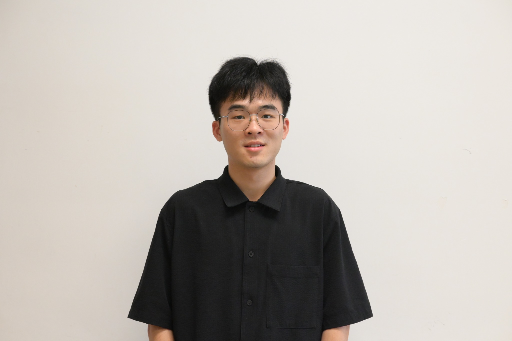

Under Review
Jiahao Zhao (趙佳豪)
I am a Ph.D. student in Computer Science at The University of Hong Kong, advised by Prof. Zhiyi Huang. Before joining HKU in September 2024, I received my B.Eng. in Information Security from the IEEE Pilot Class at Shanghai Jiao Tong University, where I was advised by Prof. Yuhao Zhang.
My research interests lie in theoretical computer science, particularly online algorithms, online learning, and algorithmic game theory.
Outside research, I enjoy playing poker and basketball.

Working Papers
In progressPublications
Authors are listed alphabetically, following the convention in theoretical computer science, unless stated otherwise.
SODA 2027
Constant-Competitive Online Selfish Load Balancing
38th ACM-SIAM Symposium on Discrete Algorithms
FOCS 2025
COCOON 2025
Tight gap-dependent memory-regret trade-off for single-pass streaming stochastic multi-armed bandits
31st International Computing and Combinatorics Conference
Education
Sep. 2024 — Present
Shanghai Jiao Tong University
B.Eng. in Information Security (IEEE Pilot Class) · Shanghai
Supervisor: Prof. Yuhao Zhang
Thesis: Research on Online Algorithms with Theoretical Guarantees
Sep. 2020 — Jun. 2024
Selected Honors & Awards
- Hong Kong PhD Fellowship Scheme (HKPFS)
- HKU Presidential PhD Scholarship (HKU-PS)
- Shanghai Outstanding Graduate (top 5%)
- China National Scholarship (top 2%)
Teaching & Service
Teaching Assistant
- Algorithm DesignSpring 2026
HKU · Prof. Zhiyi Huang
- Algorithm Design and AnalysisSpring 2025
HKU · Prof. Tak-Wah Lam
- Algorithm Design and AnalysisSpring 2023 & 2024
SJTU · Prof. Yuhao Zhang
- Optimization MethodsFall 2023
SJTU · Prof. Kuan Yang and Prof. Bo Jiang
Academic Service
- External Reviewer
SODA 2027, WINE 2026, ISAAC 2026, COCOON 2026, ESA 2025
- Student AdministratorJan. 2026 — Present
HKU CS Departmental Seminar Series